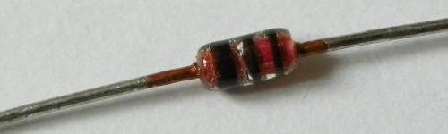
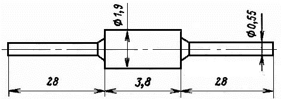

Диод КД522
(КД522А, КД522Б, 2Д522Б)
Диод КД522 (КД522А, КД522Б, 2Д522Б) - эпитаксиально-планарный, кремниевый. Имеет гибкие выводы, корпус - стеклянный. Масса: не более 0,15 г.
Макрировка КД522: на корпусе у анода чёрные кольцевые полосы:
- КД522А - два кольцо
- КД522Б - три кольца
- 2Д522Б - одно кольцо

Рис. 1 - Внешний вид диода КД522Б

Рис. 2 - Размеры диода КД522
Таблица 1
| Прямое напряжение (постоянное) при Iпр = 100 мА, не более: | |
| 2Д522Б при +25 и +125°C и КД522А, КД522Б при +25°C | 1,1 В |
| 2Д522Б при -60 и КД522А, КД522Б при -55°C | 1,5 В |
| Обратный ток (постоянный), не более: | |
| КД522Б и 2Д522Б при +25°C при Uобр= 50 В, +25°C 2Д522Б при Uобр = 50 В, -60°C |
5 мкА |
| КД522А при Uобр= 30 В, +25°C | 2 мкА |
| 2Д522Б при Uобр= 50 В, +125°C | 100 мкА |
| КД522Б при Uобр= 50 В и КД522А при Uобр = 30 В, +85°C | 50 мкА |
| Ёмкость диода (общая) при Uобр = 0, не более | 4 пФ |
| Время восстановления обратного сопротивления при Iпр= 10 мА Uобр и = 10 В, Iотс= 2 мА, не более |
4 нс |
Таблица 2
| Обратное напряжение (постоянное): | |
| 2Д522Б при -60 и +125°C и КД522Б при -55 и +85°C | 50 В |
| КД522А при -55 и +85°C | 30 мкА |
| Обратное напряжение (импульсное) при скважности не менее 10: | |
| 2Д522Б при tи ≤ 2 мкс и -60...+125°C | 75 В |
| КД522А при tи ≤ 10 мкс и -55...+85°C | 40 В |
| КД522Б при tи ≤ 10 мкс и -55...+85°C | 60 В |
| Прямой ток (средний): | |
| 2Д522Б при -60...+50°C и КД522А, КД522Б при -55...+35°C |
100 мА |
| 2Д522Б при +125°C и КД522А, КД522Б при +125°C | 50 мА |
| Прямой ток (импульсный) при t ≤ 10 мкс без превышения среднего прямого тока: | |
| 2Д522Б при -60...+50°C и КД522А, КД522Б при -55...+35°C | 1,5 А |
| 2Д522Б при +125°C | 500 мА |
| КД522А, КД522Б при +85°C | 850 мА |
| Рабочая температура (окружающей среды): | |
| 2Д522Б | -60...+125°C |
| КД522А, КД522Б | -55...+85°C |
| Температура перехода: | |
| 2Д522Б | +150°C |
| КД522А, КД522Б | +125°C |
Условные обозначения электрических параметров диодов